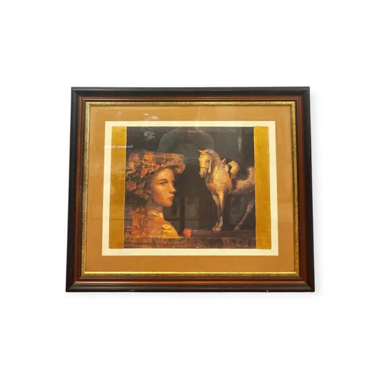
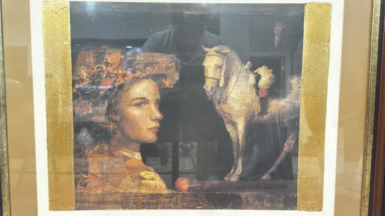
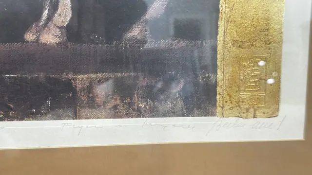
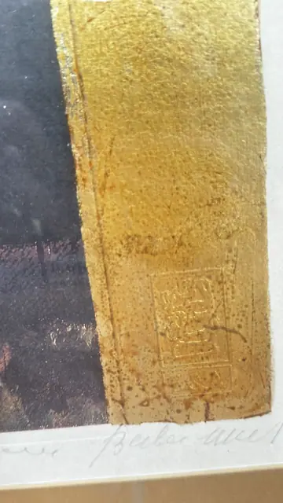

Paintings & Prints
Woman with Headdress and White Horse, Gold Leaf, Signed, Framed
· late 20th to early 21st century
Price Upon Request




About the Item
A richly worked mixed-media print in bronze, umber and gold. A woman in a jewelled headdress looks out to the left, her face lit warm against a dark interior in which a pale horse stands. Broad vertical bands of applied gold leaf frame the image at both sides, embossed with a small cartouche. The effect is deliberately Byzantine, part icon and part fashion plate. Double-matted in tan under a dark wood frame. Medium: serigraph or giclee with applied gold leaf. Signed lower right of the sheet, in pencil. Inscribed on the reverse or mount: pencil signature and what appears to be an edition note along the lower margin, not legible at this resolution. Condition: no visible damage; heavy glare from the glazing.
Details
- Creation Year:
- late 20th to early 21st century
- Medium:
- serigraph or giclee with applied gold leaf
- Period:
- 21St
- Condition:
- Offered in the condition shown in the photographs.
- Reference Number:
- VO-231
- Documentation:
- none seen
- Gallery Location:
- pencil signature and what appears to be an edition note along the lower margin, not legible at this resolution